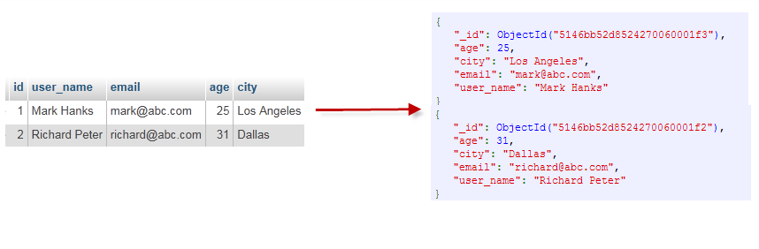
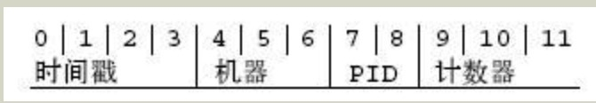

MongoDB 概念解説
どのデータベースを学ぶにしても、その基礎概念を学ぶべきです。MongoDB における基本概念はドキュメント、コレクション、データベースです。以下で順に紹介します。
次の表は、MongoDB のいくつかの概念をより簡単に理解するのに役立ちます。
| SQL 用語/概念 | MongoDB 用語/概念 | 説明/解説 |
|---|---|---|
| database | database | データベース |
| table | collection | データベーステーブル/コレクション |
| row | document | データレコード行/ドキュメント |
| column | field | データフィールド/フィールド |
| index | index | インデックス |
| table joins | テーブル結合、MongoDBはサポートしない | |
| primary key | primary key | 主キー、MongoDBは自動的に_idフィールドを主キーに設定する |
下の図の例を通して、Mongo のいくつかの概念をより直感的に理解することもできます。

完全な用語リスト：
-
ドキュメント（Document）：MongoDB の基本データ単位であり、通常は JSON に似た構造で、複数のデータ型を含むことができます。
-
コレクション（Collection）：リレーショナルデータベースのテーブルに似ており、コレクションは一連のドキュメントのコンテナです。MongoDB では、コレクション内のドキュメントは固定スキーマを持つ必要がありません。
-
データベース（Database）：1つ以上のコレクションを含む MongoDB インスタンス。
-
BSON：Binary JSON の略で、MongoDB がドキュメントを保存・転送するために使用するバイナリ形式の JSON です。
-
インデックス（Index）：クエリパフォーマンスを最適化するためのデータ構造で、コレクション内の1つ以上のフィールドに基づいてインデックスを作成できます。
-
シャーディング（Sharding）：データを複数のサーバー（シャードと呼ばれる）に分散する方法で、大規模なデータセットや高スループットのアプリケーションを処理するために使用されます。
-
レプリカセット（Replica Set）：同じデータセットを維持する MongoDB サーバーのグループで、データの冗長バックアップと高可用性を提供します。
-
プライマリノード（Primary）：レプリカセット内で、すべての書き込み操作を処理するサーバー。
-
セカンダリノード（Secondary）：レプリカセット内のサーバーで、データの読み取りと、プライマリノード障害時にプライマリノードを引き継ぐために使用されます。
-
MongoDB Shell：MongoDB が提供するコマンドラインインターフェースで、MongoDB インスタンスと対話するために使用します。
-
集約フレームワーク（Aggregation Framework）：複雑なデータ処理と集約操作を実行するための一連の操作。
-
Map-Reduce：大規模なデータセットを処理するための並列計算を行うプログラミングモデル。
-
GridFS：BSON ドキュメントのサイズ制限より大きなファイルを保存および取得するための仕様。
-
ObjectId：MongoDB が各ドキュメントに対して自動生成する一意の識別子。
-
CRUD 操作：作成（Create）、読み取り（Read）、更新（Update）、削除（Delete）の操作。
-
トランザクション（Transactions）：MongoDB 4.0 からサポートされ、一連の操作を1つの原子単位として実行できます。
-
オペレーター（Operators）：ドキュメントのクエリおよび更新に使用する特別なフィールド。
-
結合（Join）：MongoDB ではクエリ内で
$lookupオペレータを使用して、SQL のような結合操作を実現できます。 -
TTL（Time-To-Live）：コレクション内の一部のフィールドに TTL を設定して、古いデータを自動的に削除できます。
-
ストレージエンジン（Storage Engine）：データの保存と管理に使用される MongoDB の基盤技術です。WiredTiger や MongoDB の旧ストレージエンジン MMAPv1 などがあります。
-
MongoDB Compass：MongoDB のグラフィカルインターフェースツールで、MongoDB データを視覚化および管理するために使用します。
-
MongoDB Atlas：MongoDB が提供するクラウドサービスで、クラウド上で MongoDB データベースをホストできます。
データベース
1つの MongoDB に複数のデータベースを作成できます。
操作時にデータベースが指定されていない場合、MongoDB は「test」という名前のtestデフォルトデータベースを使用します。そのデータベースは data ディレクトリに保存されます。
MongoDB の単一インスタンスは複数の独立したデータベースを格納でき、それぞれが独自のコレクションと権限を持ち、異なるデータベースは異なるファイルに配置されます。
MongoDB 4.0 以降、単一のデータベース上でマルチドキュメントトランザクションを実行できます。
"show dbs"コマンドは、すべてのデータベースのリストを表示できます。
$ ./mongo MongoDB shell version: 3.0.6 connecting to: test > show dbs local 0.078GB test 0.078GB >
実行"db"コマンドは、現在のデータベースオブジェクトまたはコレクションを表示できます。
$ ./mongo MongoDB shell version: 3.0.6 connecting to: test > db test >
"use"コマンドを実行すると、指定したデータベースに接続できます。
> use local switched to db local > db local >
上記の例のコマンドでは、"local" が接続したいデータベースです。
次の章では、MongoDB におけるコマンドの使用方法を詳しく説明します。
データベースも名前で識別されます。データベース名は、次の条件を満たす任意の UTF-8 文字列にできます。
- 空文字列（""）であってはなりません。
- スペース（' '）、.、$、/、\、および \0（ヌル文字）を含んではなりません。
- すべて小文字である必要があります。
- 最大64バイト。
一部のデータベース名は予約されており、これらの特別な役割を持つデータベースに直接アクセスできます。
- admin：権限の観点から見ると、これは "root" データベースです。このデータベースにユーザーを追加すると、そのユーザーは自動的にすべてのデータベースの権限を継承します。いくつかの特定のサーバーサイドコマンドもこのデータベースからのみ実行できます。たとえば、すべてのデータベースの一覧表示やサーバーのシャットダウンなどです。
- local:このデータは決して複製されないため、ローカルの単一サーバーに限定された任意のコレクションを保存するために使用できます。
- config：MongoDB がシャーディング設定に使用される場合、config データベースは内部で使用され、シャーディングに関する情報を保存します。
ドキュメント(Document)
ドキュメントはキーと値（key-value）のペア（つまり BSON）の集まりです。MongoDB のドキュメントは同じフィールドを設定する必要がなく、同じフィールドでも同じデータ型である必要はありません。これはリレーショナルデータベースとの大きな違いであり、MongoDB の非常に顕著な特徴です。
簡単なドキュメントの例は次のとおりです。
{"site":"www.runoob.com", "name":"菜鸟教程"}
次の表は、RDBMS と MongoDB に対応する用語を示しています。
| RDBMS | MongoDB |
|---|---|
| データベース | データベース |
| テーブル | コレクション |
| 行 | ドキュメント |
| 列 | フィールド |
| テーブル結合 | 埋め込みドキュメント |
| 主キー | 主キー (MongoDB はキーとして _id を提供します) |
| データベースサービスとクライアント | |
| Mysqld/Oracle | mongodb |
| mysql/sqlplus | mongo |
注意すべき点：
- ドキュメント内のキーと値のペアは順序付けられています。
- ドキュメント内の値は、二重引用符で囲まれた文字列だけでなく、他のいくつかのデータ型（埋め込みドキュメント全体であっても）にすることができます。
- MongoDB は型と大文字小文字を区別します。
- MongoDB のドキュメントは重複したキーを持つことはできません。
- ドキュメントのキーは文字列です。いくつかの例外を除き、キーには任意の UTF-8 文字を使用できます。
ドキュメントのキー命名規則：
- キーに \0（ヌル文字）を含めることはできません。この文字はキーの終わりを示すために使用されます。
- . と $ は特別な意味を持ち、特定の環境でのみ使用できます。
- アンダースコア "_" で始まるキーは予約されています（厳密には要求されていません）。
コレクション
コレクションは MongoDB のドキュメントのグループであり、RDBMS（リレーショナルデータベース管理システム：Relational Database Management System）のテーブルに似ています。
コレクションはデータベース内に存在し、固定された構造を持ちません。つまり、コレクションには異なる形式や型のデータを挿入できますが、通常、コレクションに挿入するデータにはある程度の関連性があります。
たとえば、次のような異なるデータ構造のドキュメントをコレクションに挿入できます。
{"site":"www.baidu.com"}
{"site":"www.google.com","name":"Google"}
{"site":"www.runoob.com","name":"菜鸟教程","num":5}
最初のドキュメントが挿入されると、コレクションが作成されます。
有効なコレクション名
- コレクション名は空文字列 "" であってはなりません。
- コレクション名には \0 文字（ヌル文字）を含めることはできません。この文字はコレクション名の終わりを示します。
- コレクション名は "system." で始めてはなりません。これはシステムコレクション用に予約されたプレフィックスです。
- ユーザーが作成するコレクション名には予約文字を含めることはできません。一部のドライバーは実際にコレクション名に $ を含めることをサポートしていますが、これは一部のシステム生成コレクションにその文字が含まれているためです。このようなシステム作成のコレクションにアクセスする必要がない限り、名前に $ を絶対に入れないでください。
以下に例を示します。
db.col.findOne()
capped collections
Capped collections は固定サイズのコレクションです。
高性能であり、キュー有効期限（挿入順に従った有効期限）の特性を持っています。"RRD" の概念に少し似ています。
Capped collections は、オブジェクトの挿入順序を自動的に維持する高性能なコレクションです。ログ記録のような機能に非常に適しています。標準のコレクションとは異なり、明示的に capped collection を作成し、コレクションのサイズをバイト単位で指定する必要があります。コレクションのデータ格納領域は事前に割り当てられます。
Capped collections はドキュメントの挿入順序に従ってコレクションに保存でき、これらのドキュメントのディスク上の保存位置も挿入順序に従って保存されます。そのため、Capped collections 内のドキュメントを更新する際、更新後のドキュメントは以前のドキュメントのサイズを超えてはなりません。これにより、すべてのドキュメントのディスク上の位置が常に一定に保たれることを保証できます。
Capped collection はインデックスを使用せずにドキュメントの挿入順序によって挿入位置を決定するため、データ追加の効率を向上させることができます。MongoDB の操作ログファイル oplog.rs は、Capped Collection を利用して実装されています。
注意すべき点は、指定されたストレージサイズにはデータベースのヘッダー情報が含まれることです。
db.createCollection("mycoll", {capped:true, size:100000})
- capped collection では、新しいオブジェクトを追加できます。
- 更新は可能ですが、オブジェクトはストレージ領域を増やせません。増やすと、更新は失敗します。
- Capped Collection ではドキュメントを1つ削除することはできません。drop() メソッドを使用してコレクションのすべての行を削除できます。
- 削除後、明示的にこのコレクションを再作成する必要があります。
- 32ビットマシンでは、capped collection の最大ストレージは 1e9（1X109）バイトです。
メタデータ
データベースの情報はコレクションに格納されます。これらはシステムの名前空間を使用します：
dbname.system.*
MongoDBデータベースでは、名前空間 <dbname>.system.* は、さまざまなシステム情報を含む特別なコレクションです。以下に示します：
| コレクション名前空間 | 説明 |
|---|---|
| dbname.system.namespaces | すべての名前空間を一覧表示します。 |
| dbname.system.indexes | すべてのインデックスを一覧表示します。 |
| dbname.system.profile | データベースのプロファイル情報が含まれます。 |
| dbname.system.users | アクセス可能なデータベースのすべてのユーザーを一覧表示します。 |
| dbname.local.sources | レプリケーションのスレーブサーバーの情報と状態が含まれます。 |
システムコレクション内のオブジェクトの変更には、次の制限があります。
{{system.indexes}} にデータを挿入すると、インデックスを作成できます。ただし、それ以外にこのテーブルの情報は変更できません（特別なdrop indexコマンドが関連情報を自動的に更新します）。
{{system.users}} は変更可能です。{{system.profile}} は削除可能です。
MongoDB データ型
次の表は、MongoDBでよく使用されるいくつかのデータ型です。
| データ型 | 説明 |
|---|---|
| String | 文字列。データを格納する一般的なデータ型。MongoDB では、UTF-8 エンコードの文字列のみが有効です。 |
| Integer | 整数値。数値を格納するために使用します。使用するサーバーに応じて、32 ビットまたは 64 ビットに分けられます。 |
| Boolean | ブール値。ブール値（真/偽）を格納するために使用します。 |
| Double | 倍精度浮動小数点値。浮動小数点値を格納するために使用します。 |
| Min/Max keys | 値を BSON（バイナリ JSON）要素の最小値および最大値と比較します。 |
| Array | 配列、リスト、または複数の値を1つのキーとして格納するために使用します。 |
| Timestamp | タイムスタンプ。ドキュメントの変更または追加の具体的な時刻を記録します。 |
| Object | 埋め込みドキュメントに使用します。 |
| Null | null 値を作成するために使用します。 |
| Symbol | シンボル。このデータ型は基本的に文字列型と同等ですが、異なる点は、特別なシンボル型を採用する言語で一般的に使用されることです。 |
| Date | 日時。UNIX 時間形式で現在の日付または時刻を格納します。独自の日時を指定できます：Date オブジェクトを作成し、年月日の情報を渡します。 |
| Object ID | オブジェクト ID。ドキュメントの ID を作成するために使用します。 |
| Binary Data | バイナリデータ。バイナリデータを格納するために使用します。 |
| Code | コード型。ドキュメントに JavaScript コードを格納するために使用します。 |
| Regular expression | 正規表現型。正規表現を格納するために使用します。 |
以下に、いくつかの重要なデータ型について説明します。
ObjectId
ObjectId は一意の主キーのようなもので、すばやく生成および並べ替えができます。12 バイトで構成され、その意味は次のとおりです：
- 最初の 4 バイトは作成unixタイムスタンプ、グリニッジ標準時UTC時刻を表し、北京時間より 8 時間遅れています
- 次の 3 バイトはマシン識別コードです
- 続く 2 バイトはプロセス ID（PID）で構成されます
- 最後の 3 バイトは乱数です

MongoDB に格納されるドキュメントには _id キーが必須です。このキーの値は任意の型にでき、デフォルトでは ObjectId オブジェクトです
ObjectId には作成タイムスタンプが保存されているため、ドキュメントにタイムスタンプフィールドを保存する必要はありません。getTimestamp 関数を使用してドキュメントの作成時刻を取得できます：
> var newObject = ObjectId()
> newObject.getTimestamp()
ISODate("2017-11-25T07:21:10Z")
ObjectId を文字列に変換
> newObject.str 5a1919e63df83ce79df8b38f
文字列
BSON 文字列はすべて UTF-8 エンコードです。
タイムスタンプ
BSON には MongoDB 内部で使用される特別なタイムスタンプ型があり、通常の日付型とは関連しません。タイムスタンプ値は 64 ビットの値です。その内訳は次のとおりです：
- 最初の 32 ビットは time_t 値（Unix エポックからの経過秒数）です
- 残りの 32 ビットは、特定の秒内での操作の増分です
序数
単一の mongod インスタンスでは、タイムスタンプ値は通常一意です。
レプリカセットでは、oplog に ts フィールドがあります。このフィールドの値は、BSON タイムスタンプを使用して操作時刻を表します。
BSON タイムスタンプ型は主に MongoDB 内部で使用されます。ほとんどのアプリケーション開発では、BSON 日付型を使用できます。
日付
Unix エポック（1970年1月1日）からの現在のミリ秒数を表します。日付型は符号付きで、負の数は 1970 年より前の日付を表します。
> var mydate1 = new Date() //格林尼治时间
> mydate1
ISODate("2018-03-04T14:58:51.233Z")
> typeof mydate1
object
> var mydate2 = ISODate() //格林尼治时间
> mydate2
ISODate("2018-03-04T15:00:45.479Z")
> typeof mydate2
object
このように作成された時刻は日付型であり、JS の Date 型のメソッドを使用できます。
時間型の文字列を返します：
> var mydate1str = mydate1.toString() > mydate1str Sun Mar 04 2018 14:58:51 GMT+0000 (UTC) > typeof mydate1str string
または
> Date() Sun Mar 04 2018 15:02:59 GMT+0000 (UTC)その他の拡張
クリックしてノートを共有
<p style="font-size:14px;">ノートは本記事の内容の拡張である必要があります！</p><br> <p style="font-size:12px;"><a href="../tougao.html" target="_blank">記事の投稿は、こちらをクリックしてください</a></p> <p style="font-size:14px;"><a href="../w3cnote/runoob-user-test-intro.html" target="_blank">登録招待コードの取得方法</a></p> <h3 class="text-muted"><i class="fa fa-info-circle" aria-hidden="true"></i> ノートを共有する前に<a href=";.html" class="runoob-pop">ログイン</a>が必要です！</h3> <p><a href="../w3cnote/runoob-user-test-intro.html" target="_blank">登録招待コードの取得方法</a></p>